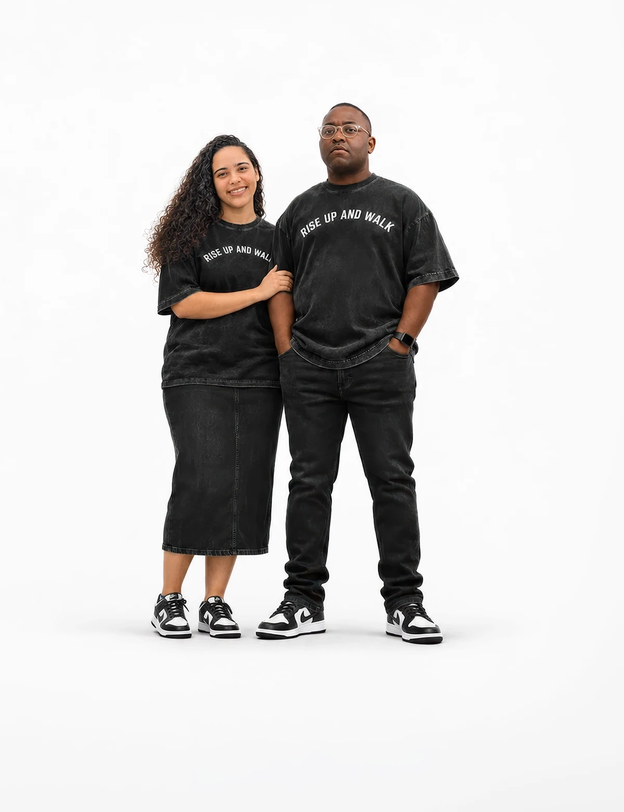

Rise in faith.
Respond to the call of Jesus and trust Him for a transformed life.


“In the name of Jesus Christ of Nazareth rise up and walk.” — ACTS 3:6 (KJV)
A call to rise in faith, walk with Jesus Christ, and carry His gospel all over the city.
“In the name of Jesus Christ of Nazareth rise up and walk.”ACTS 3:6 • KJV
Rise Up and Walk is more than a phrase. It is our invitation to a life transformed by Jesus Christ.
In Acts 3, Peter spoke these words to a man who could not walk, and by the power of Jesus Christ, the man rose to his feet. His healing revealed the power of the name of Jesus.
Inspired by this moment, Rise City calls people to respond to Jesus: to rise out of what has held them back, walk with Him in faith and obedience, and grow into the purpose He has for their lives.
As we walk with Christ, we share His gospel all over the city—bringing hope, prayer, truth, and the love of Jesus to others.
Explore Our Apostolic FaithRespond to the call of Jesus and trust Him for a transformed life.
Follow Jesus daily through His Word, prayer, and the power of the Holy Ghost.
Share the hope of Jesus and serve others all over the city.
We believe that in Jesus Christ, people can rise up and walk in newness of life.
Our name is inspired by Acts 3:6. We are a Jesus-centered Apostolic church calling people to rise in faith, walk with Christ, and discover the transforming power of His Word and Spirit.
As we follow Jesus together, we want to see lives restored, families strengthened, and disciples equipped to share the gospel all over the city.
We are committed to the same truth, power, and transforming experience found in the New Testament church.
Respond to the gospel and encounter the life-changing power of Jesus Christ.
Grow through Scripture, prayer, the Holy Ghost, and daily obedience to Jesus.
Carry the good news and love of Jesus Christ all over the city.
Rooted in Scripture. Centered on Jesus. Empowered by the Spirit.
Our faith is built upon the unchanging Word of God and the teachings of Jesus Christ and His apostles. We believe the same truth, power, and transforming experience found in the New Testament church are available to every generation.
Explore All 11 BeliefsWe are committed to preserving the Apostolic message, living a Spirit-filled life, and continuing the mission of the New Testament church.
“One Lord, one faith, one baptism, One God and Father of all...”We rise in faith and walk with Christ so that others can encounter Him too. Our mission is to share the good news of Jesus all over the city and make disciples who follow Him every day.
We want every person to hear the life-changing message of Jesus Christ.
GOOD NEWS FOR EVERYONE.Helping people know Jesus, grow in the Word, and follow Him with purpose.
FAITH THAT GROWS.Demonstrating the love of Christ through prayer, compassion, and meaningful connections.
LOVE IN ACTION.Ready to take a step of faith? Want to know more about following Jesus, share a prayer request, or help bring the gospel all over the city? We would love to connect with you.